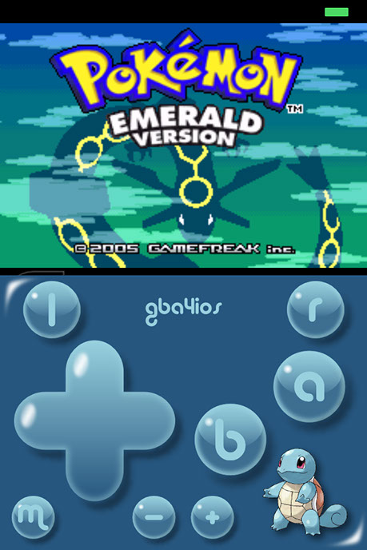

GBA4iOS 2.x.x is an astounding GameBoy Advance emulator. Created by Riley Testut, a high school student in his senior year, GBA4iOS is one of the slickest and most beautiful emulators ever created. It is the successor to GBA4iOS 1.6, which you can also download.
Features include:
- Skin support
- Warioware Twisted support
- Native iPad support
- MFi controller support
- Dropbox sync support
- Even more!
Games can easily be put into the documents folder with iTunes File Sharing, or downloaded from Safari and then put into GBA4iOS 2.x.x with the Open in function.
Only for iOS 7 devices and up.